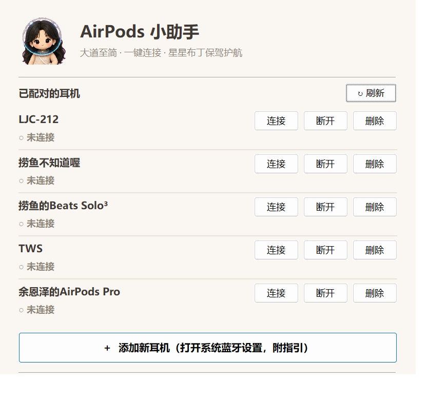

AirPods 小助手
大道至简 · 一键连接 · 星星布丁保驾护航
⬇ 一键下载（Windows 版）下载 zip 解压，双击 AirPodsBuddy.exe 即用 · 查看历史版本
为什么需要它？
Windows 连 AirPods 要点四五下设置，还要等半天。交给小助手，一下就好。
🔍
设备检测
自动列出本机所有已配对的蓝牙耳机：AirPods、Beats、其他耳机音箱统统识别。
🎧
一键连接 / 断开
每台设备独立按钮，连接后自动切换音频输出，摘下即走，点一下就断。
➕
保姆级添加指引
一键打开系统蓝牙设置，弹出图文指引：断开旧设备、进入待连接模式、各型号操作说明。
🗑️
一键删除
不再使用的耳机？在小助手里一站式移除，不用钻进系统设置翻找。
🤍
米白简约设计
克制的配色、干净的排版、可爱的星星布丁。工具也可以很温柔。
🔒
纯本地运行
不联网、不上传、无广告、无后台。所有操作只调用 Windows 自带蓝牙接口。
三步上手
小白友好，全程有人带路。
1
下载并打开
点上方一键下载，解压后双击 AirPodsBuddy.exe，无需任何安装。
2
首次配对（仅一次）
点「添加新耳机」，跟着指引在系统设置里完成配对。之后再也不用进设置。
3
从此一键连接
打开小助手，点「连接」，戴上耳机就能听。想断开就点「断开」。

主界面：米白底色、设备列表、一键连接 / 断开 / 删除
关于捞鱼 🐟
和星星布丁一起做的开源小工具 · 用爱发电

粉丝群
一起摸鱼聊技术

赞赏码
帮到了你就请我喝杯奶茶
星星布丁表情包
超可爱，快扫码收藏